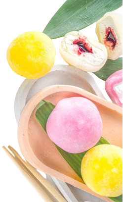

SOBRE O MOCHI
Nossos mochis são mais do que uma sobremesa; são uma experiência culinária única.
Na MOCHILAND, cada mochi é uma obra-prima artesanal, cuidadosamente elaborada para proporcionar uma experiência gastronômica inigualável. Nossa receita exclusiva, guardada a sete chaves, combina arroz glutinoso de alta qualidade com ingredientes frescos e recheios deliciosos.
Cada mochi é moldado à mão por nossos mestres mochileiros, garantindo uma textura perfeitamente macia e elástica que é a marca registrada dos melhores mochis. Utilizamos métodos tradicionais combinados com técnicas inovadoras para criar uma variedade de sabores que cativam desde os paladares mais exigentes até os curiosos por novidades.
